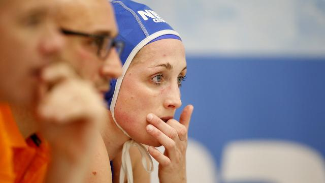

Waterpoloster Smit was desnoods 'in onderbroek' naar Spelen gegaan
Het mislopen van de Spelen in Rio de Janeiro kan op termijn nadelige gevolgen hebben voor de waterpolovrouwen, maar daar was aanvoerster Yasemin Smit zaterdag na de uitschakeling op het Olympisch Kwalificatietoernooi (OKT) niet mee bezig. "Ik wilde gewoon naar Rio. Dat was het enige dat telde", zei de 31-jarige Smit in Gouda na de 10-7 nederlaag tegen Spanje, dat daardoor wel naar de Spelen gaat. Na afloop ging het er al over dat de waterpolovrouwen mogelijk hun A-status verliezen, waardoor er aanzienlijk minder geld beschikbaar zou komen voor de ploeg. "Maar daar ben ik nu niet mee bezig", zei Smit. "Ik was desnoods in mijn onderbroek naar Rio gegaan als dat had gemoeten. Dat maakt mij echt niets. Ik deed alles voor de Spelen." Smit is de enige speelster in de huidige selectie die nog over is van de ploeg die acht jaar geleden goud veroverde op de Spelen in Peking. Vier jaar geleden was ze er ook bij toen Oranje het niet redde op het OKT voor Londen. "Deze nederlaag komt harder aan dan die in 2012. Wat ik zo moeilijk vind is dat we nu beter zijn dan vier jaar geleden. Er had veel meer in deze ploeg gezeten. Dat mogen we onszelf verwijten."
druk
Voorafgaand aan het duel met Spanje had Smit wel een goed gevoel. Ze dacht dat Oranje nu wel met de druk om zou kunnen gaan, nadat het begin dit jaar in Belgrado misging in de EK-finale tegen Hongarije. "In Belgrado voelde ik de spanning vooraf. Het was toen een beetje bibberig. Dit keer niet. Ik had echt het gevoel dat we klaar waren voor Spanje, maar dat was dus niet zo. In het eerste kwart hebben we het uit de hand laten lopen." Oranje keek in dat eerste kwart al na een paar minuten tegen een 4-0 achterstand aan en die klap kwam de ploeg volgens Smit niet meer te boven. "Zo'n achterstand mag gewoon niet gebeuren. We waren de hele wedstrijd bezig om ons terug te vechten. En toen we eindelijk in de buurt kwamen, kregen we meteen twee goals om de oren." "Het wegwerken van de achterstand had ons veel kracht gekost en dat heeft ons toen genekt. Maar al met al hebben we gewoon niet goed genoeg gespeeld. Ik ga er niet omheen draaien, op het moment suprême stonden we er niet.Volgend nieuws bericht